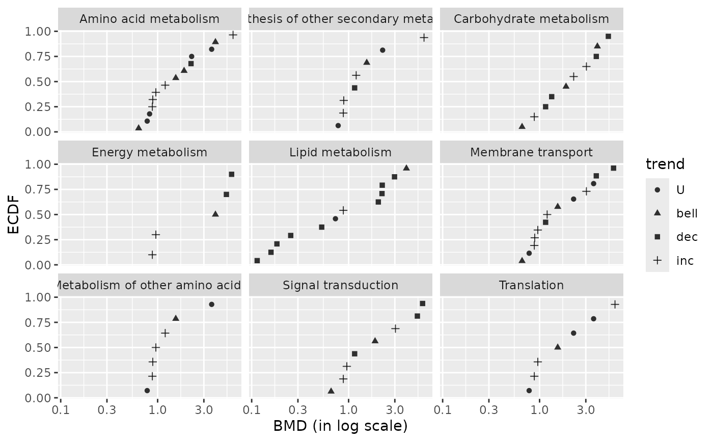
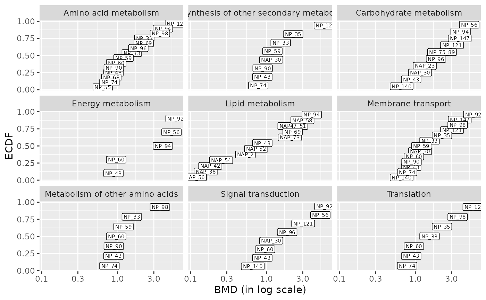
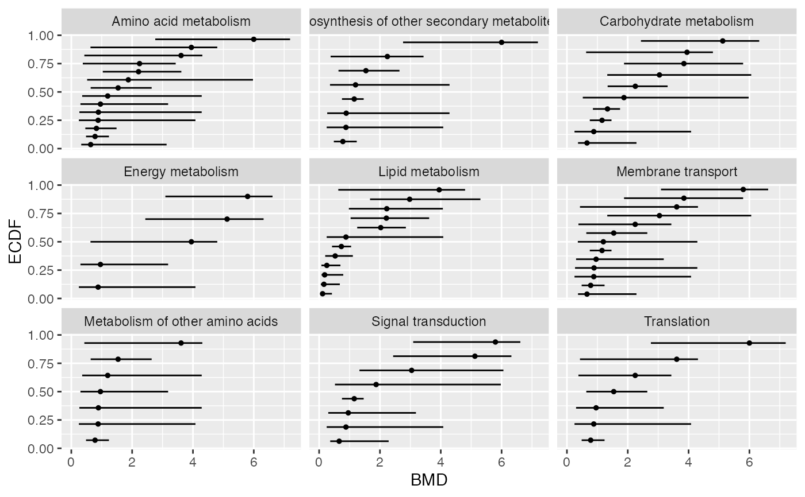
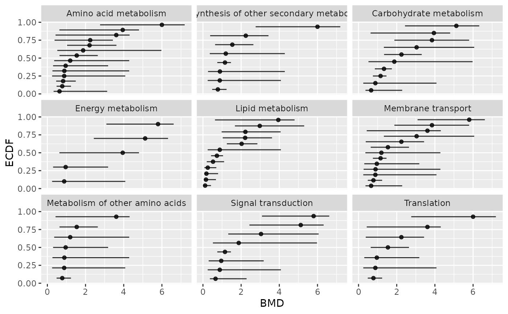
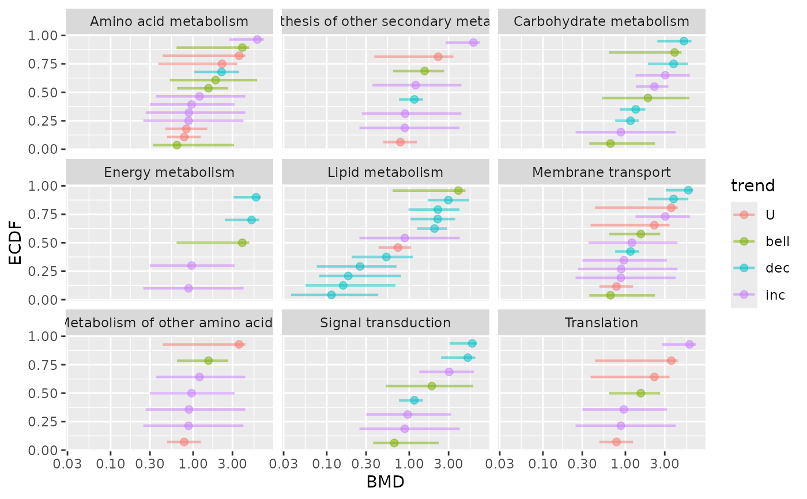
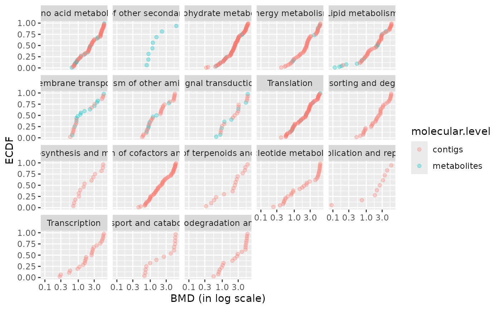
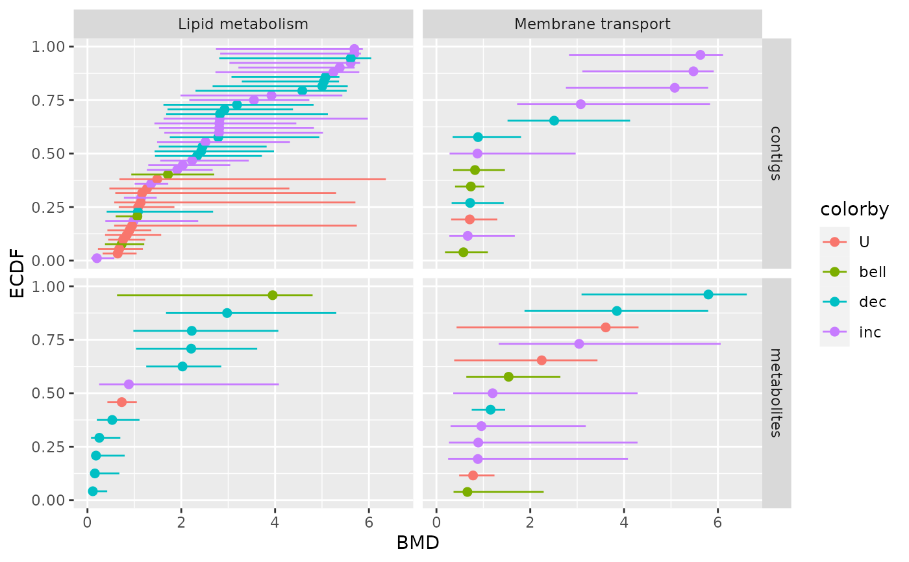

BMD plot optionally with confidence intervals on BMD
bmdplot.RdProvides an ECDF plot of BMD values optionally with confidence intervals on each BMD value and/or labels of items.
Usage
bmdplot(extendedres, BMDtype = c("zSD", "xfold"),
add.CI = FALSE,
facetby, facetby2,
shapeby, colorby,
point.size = 1,
ncol4faceting,
add.label = FALSE, label.size = 2,
BMD_log_transfo = TRUE)Arguments
- extendedres
the dataframe of results provided by
plot.bmdcalcorplot.bmdboot(res) or a subset of this data frame (selected lines). This dataframe can be extended with additional columns coming for example from the functional annotation of items, and some lines can be replicated if their corresponding item has more than one annotation. This dataframe must at least contain the column giving the BMD values (BMD.zSDorBMD.xfolddepending of chosen BMDtype), identification of each curve (id), and ifadd.CIis TRUE, the columnsBMD.zSD.lower,BMD.zSD.upperorBMD.xfold.lower,BMD.xfold.upperdepending of the argumentBMDtype.- BMDtype
The type of BMD to plot,
"zSD"(default choice) or"xfold".- add.CI
If
TRUE(default choice at FALSE) for each item the confidence interval is added.- facetby
optional argument naming the column of
extendedreschosen to split the plot in facets usingggplot2::facet_wrap(no split if omitted).- facetby2
optional argument naming the column of
extendedreschosen as an additional argument to split the plot in facets usingggplot2::facet_grid, with columns defined byfacetbyand rows defined byfacetby2(no split if omitted).- shapeby
optional argument naming the column of
extendedreschosen to shape the BMD points (no difference if shapeby if omitted).- colorby
optional argument naming the column of
extendedreschosen to color the BMD points (no difference if colorby if omitted).- point.size
Size of the BMD points.
- ncol4faceting
Number of columns for facetting (not used if
facetby2is also provided.- add.label
Points are replaced by labels of items if TRUE.
- label.size
Size of labels if add.label is TRUE.
- BMD_log_transfo
If TRUE, default option, a log transformation of the BMD is used in the plot.
Details
BMD values are plotted as an ECDF plot, as with plot.bmdcalc
using "ecdf" as plottype with confidence intervals on each BMD value
and/or labels of items if requested. The optional use of columns to code for shape and/or
facets for each item is particularly intended to give a view of all the dose-response
per group (e.g. metabolic pathways). Those groups must be coded in a column
of extendedres. In case where one item is allocated to more than one group
during the annotation process, the line of this item must be replicated in
extendedres as many times as the number of annotation groups in which it was
allocated.
See also
See plot.bmdcalc, plot.bmdboot and
ecdfplotwithCI.
Examples
# (1)
# Plot of BMD values with color dose-response gradient
# faceted by metabolic pathway (from annotation of the selected items)
# and shaped by dose-response trend
# An example from the paper published by Larras et al. 2020
# in Journal of Hazardous Materials
# https://doi.org/10.1016/j.jhazmat.2020.122727
# A example of plot obtained with this function is in Figure 5 in Larras et al. 2020
# the dataframe with metabolomic results (output $res of bmdcalc() or bmdboot() functions)
resfilename <- system.file("extdata", "triclosanSVmetabres.txt", package="DRomics")
res <- read.table(resfilename, header = TRUE, stringsAsFactors = TRUE)
str(res)
#> 'data.frame': 31 obs. of 27 variables:
#> $ id : Factor w/ 31 levels "NAP47_51","NAP_2",..: 2 3 4 5 6 7 8 9 10 11 ...
#> $ irow : int 2 21 28 34 38 47 49 51 53 67 ...
#> $ adjpvalue : num 6.23e-05 1.11e-05 1.03e-05 1.89e-03 4.16e-03 ...
#> $ model : Factor w/ 4 levels "Gauss-probit",..: 2 3 3 2 2 4 2 2 3 3 ...
#> $ nbpar : int 3 2 2 3 3 5 3 3 2 2 ...
#> $ b : num 0.4598 -0.0595 -0.0451 0.6011 0.6721 ...
#> $ c : num NA NA NA NA NA ...
#> $ d : num 5.94 5.39 7.86 6.86 6.21 ...
#> $ e : num -1.648 NA NA -0.321 -0.323 ...
#> $ f : num NA NA NA NA NA ...
#> $ SDres : num 0.126 0.0793 0.052 0.2338 0.2897 ...
#> $ typology : Factor w/ 10 levels "E.dec.concave",..: 2 7 7 2 2 9 2 2 7 7 ...
#> $ trend : Factor w/ 4 levels "U","bell","dec",..: 3 3 3 3 3 1 3 3 3 3 ...
#> $ y0 : num 5.94 5.39 7.86 6.86 6.21 ...
#> $ yrange : num 0.456 0.461 0.35 0.601 0.672 ...
#> $ maxychange : num 0.456 0.461 0.35 0.601 0.672 ...
#> $ xextrem : num NA NA NA NA NA ...
#> $ yextrem : num NA NA NA NA NA ...
#> $ BMD.zSD : num 0.528 1.333 1.154 0.158 0.182 ...
#> $ BMR.zSD : num 5.82 5.31 7.81 6.62 5.92 ...
#> $ BMD.xfold : num NA NA NA NA 0.832 ...
#> $ BMR.xfold : num 5.35 4.85 7.07 6.17 5.59 ...
#> $ BMD.zSD.lower : num 0.2001 0.8534 0.7519 0.0554 0.081 ...
#> $ BMD.zSD.upper : num 1.11 1.746 1.465 0.68 0.794 ...
#> $ BMD.xfold.lower : num Inf 7.611 Inf 0.561 0.329 ...
#> $ BMD.xfold.upper : num Inf Inf Inf Inf Inf ...
#> $ nboot.successful: int 957 1000 1000 648 620 872 909 565 1000 1000 ...
# the dataframe with annotation of each item identified in the previous file
# each item may have more than one annotation (-> more than one line)
annotfilename <- system.file("extdata", "triclosanSVmetabannot.txt", package="DRomics")
annot <- read.table(annotfilename, header = TRUE, stringsAsFactors = TRUE)
str(annot)
#> 'data.frame': 84 obs. of 2 variables:
#> $ metab.code: Factor w/ 31 levels "NAP47_51","NAP_2",..: 2 3 4 4 4 4 5 6 7 8 ...
#> $ path_class: Factor w/ 9 levels "Amino acid metabolism",..: 5 3 3 2 6 8 5 5 5 5 ...
# Merging of both previous dataframes
# in order to obtain an extenderes dataframe
extendedres <- merge(x = res, y = annot, by.x = "id", by.y = "metab.code")
head(extendedres)
#> id irow adjpvalue model nbpar b c d
#> 1 NAP47_51 46 7.158246e-04 linear 2 -0.05600559 NA 7.343571
#> 2 NAP_2 2 6.232579e-05 exponential 3 0.45981242 NA 5.941896
#> 3 NAP_23 21 1.106958e-05 linear 2 -0.05946618 NA 5.387252
#> 4 NAP_30 28 1.028343e-05 linear 2 -0.04507832 NA 7.859109
#> 5 NAP_30 28 1.028343e-05 linear 2 -0.04507832 NA 7.859109
#> 6 NAP_30 28 1.028343e-05 linear 2 -0.04507832 NA 7.859109
#> e f SDres typology trend y0 yrange maxychange
#> 1 NA NA 0.12454183 L.dec dec 7.343571 0.4346034 0.4346034
#> 2 -1.647958 NA 0.12604568 E.dec.convex dec 5.941896 0.4556672 0.4556672
#> 3 NA NA 0.07929266 L.dec dec 5.387252 0.4614576 0.4614576
#> 4 NA NA 0.05203245 L.dec dec 7.859109 0.3498078 0.3498078
#> 5 NA NA 0.05203245 L.dec dec 7.859109 0.3498078 0.3498078
#> 6 NA NA 0.05203245 L.dec dec 7.859109 0.3498078 0.3498078
#> xextrem yextrem BMD.zSD BMR.zSD BMD.xfold BMR.xfold BMD.zSD.lower
#> 1 NA NA 2.2237393 7.219029 NA 6.609214 0.9785095
#> 2 NA NA 0.5279668 5.815850 NA 5.347706 0.2000881
#> 3 NA NA 1.3334076 5.307960 NA 4.848527 0.8533711
#> 4 NA NA 1.1542677 7.807077 NA 7.073198 0.7518588
#> 5 NA NA 1.1542677 7.807077 NA 7.073198 0.7518588
#> 6 NA NA 1.1542677 7.807077 NA 7.073198 0.7518588
#> BMD.zSD.upper BMD.xfold.lower BMD.xfold.upper nboot.successful
#> 1 4.068699 Inf Inf 1000
#> 2 1.109559 Inf Inf 957
#> 3 1.746010 7.610936 Inf 1000
#> 4 1.464998 Inf Inf 1000
#> 5 1.464998 Inf Inf 1000
#> 6 1.464998 Inf Inf 1000
#> path_class
#> 1 Lipid metabolism
#> 2 Lipid metabolism
#> 3 Carbohydrate metabolism
#> 4 Carbohydrate metabolism
#> 5 Biosynthesis of other secondary metabolites
#> 6 Membrane transport
### (1.a) BMDplot by pathway shaped by trend
bmdplot(extendedres, BMDtype = "zSD",
facetby = "path_class",
shapeby = "trend")

# \donttest{
### (1.b) BMDplot by pathway with items labels
bmdplot(extendedres, BMDtype = "zSD",
facetby = "path_class",
add.label = TRUE,
label.size = 1.5)

### (1.c) BMDplot by pathway with confidence intervals
bmdplot(extendedres, BMDtype = "zSD",
facetby = "path_class",
add.CI = TRUE)

### (1.d) BMDplot by pathway with confidence intervals
# in BMD raw scale (not default log scale)
bmdplot(extendedres, BMDtype = "zSD",
facetby = "path_class",
add.CI = TRUE,
BMD_log_transfo = FALSE)

### (1.e) BMDplot by pathway with confidence intervals
# colored by trend
bmdplot(extendedres, BMDtype = "zSD",
facetby = "path_class",
add.CI = TRUE,
colorby = "trend")

# (2)
# An example with two molecular levels
#
### Rename metabolomic results
metabextendedres <- extendedres
# Import the dataframe with transcriptomic results
contigresfilename <- system.file("extdata", "triclosanSVcontigres.txt", package = "DRomics")
contigres <- read.table(contigresfilename, header = TRUE, stringsAsFactors = TRUE)
str(contigres)
#> 'data.frame': 447 obs. of 27 variables:
#> $ id : Factor w/ 447 levels "c00134","c00276",..: 1 2 3 4 5 6 7 8 9 10 ...
#> $ irow : int 2802 39331 41217 52577 52590 53968 54508 57776 58705 60306 ...
#> $ adjpvalue : num 2.76e-04 9.40e-07 2.89e-06 1.88e-03 1.83e-03 ...
#> $ model : Factor w/ 4 levels "Gauss-probit",..: 3 2 2 2 2 2 3 2 1 3 ...
#> $ nbpar : int 2 3 3 3 3 3 2 3 4 2 ...
#> $ b : num -0.21794 1.49944 1.40817 0.00181 1.48605 ...
#> $ c : num NA NA NA NA NA ...
#> $ d : num 10.9 12.4 12.4 16.4 15.3 ...
#> $ e : num NA -2.2 -2.41 1.15 -2.31 ...
#> $ f : num NA NA NA NA NA ...
#> $ SDres : num 0.417 0.287 0.281 0.145 0.523 ...
#> $ typology : Factor w/ 10 levels "E.dec.concave",..: 7 2 2 4 2 2 7 1 5 8 ...
#> $ trend : Factor w/ 4 levels "U","bell","dec",..: 3 3 3 4 3 3 3 3 1 4 ...
#> $ y0 : num 10.9 12.4 12.4 16.4 15.3 ...
#> $ yrange : num 1.445 1.426 1.319 0.567 1.402 ...
#> $ maxychange : num 1.445 1.426 1.319 0.567 1.402 ...
#> $ xextrem : num NA NA NA NA NA ...
#> $ yextrem : num NA NA NA NA NA ...
#> $ BMD.zSD : num 1.913 0.467 0.536 5.073 1.004 ...
#> $ BMR.zSD : num 10.4 12.1 12.1 16.6 14.8 ...
#> $ BMD.xfold : num 4.98 3.88 5.13 NA NA ...
#> $ BMR.xfold : num 9.77 11.19 11.17 18.05 13.8 ...
#> $ BMD.zSD.lower : num 1.255 0.243 0.282 2.65 0.388 ...
#> $ BMD.zSD.upper : num 2.759 0.825 0.925 5.573 2.355 ...
#> $ BMD.xfold.lower : num 3.94 2.32 2.79 Inf 3.06 ...
#> $ BMD.xfold.upper : num Inf Inf Inf Inf Inf ...
#> $ nboot.successful: int 500 497 495 332 466 469 500 321 260 500 ...
# Import the dataframe with functional annotation (or any other descriptor/category
# you want to use, here KEGG pathway classes)
contigannotfilename <- system.file("extdata", "triclosanSVcontigannot.txt", package = "DRomics")
contigannot <- read.table(contigannotfilename, header = TRUE, stringsAsFactors = TRUE)
str(contigannot)
#> 'data.frame': 562 obs. of 2 variables:
#> $ contig : Factor w/ 447 levels "c00134","c00276",..: 1 2 3 4 5 6 7 8 9 10 ...
#> $ path_class: Factor w/ 17 levels "Amino acid metabolism",..: 3 11 11 15 8 4 3 4 8 2 ...
# Merging of both previous dataframes
contigextendedres <- merge(x = contigres, y = contigannot, by.x = "id", by.y = "contig")
# to see the structure of this dataframe
str(contigextendedres)
#> 'data.frame': 562 obs. of 28 variables:
#> $ id : Factor w/ 447 levels "c00134","c00276",..: 1 2 3 4 5 6 7 8 9 10 ...
#> $ irow : int 2802 39331 41217 52577 52590 53968 54508 57776 58705 60306 ...
#> $ adjpvalue : num 2.76e-04 9.40e-07 2.89e-06 1.88e-03 1.83e-03 ...
#> $ model : Factor w/ 4 levels "Gauss-probit",..: 3 2 2 2 2 2 3 2 1 3 ...
#> $ nbpar : int 2 3 3 3 3 3 2 3 4 2 ...
#> $ b : num -0.21794 1.49944 1.40817 0.00181 1.48605 ...
#> $ c : num NA NA NA NA NA ...
#> $ d : num 10.9 12.4 12.4 16.4 15.3 ...
#> $ e : num NA -2.2 -2.41 1.15 -2.31 ...
#> $ f : num NA NA NA NA NA ...
#> $ SDres : num 0.417 0.287 0.281 0.145 0.523 ...
#> $ typology : Factor w/ 10 levels "E.dec.concave",..: 7 2 2 4 2 2 7 1 5 8 ...
#> $ trend : Factor w/ 4 levels "U","bell","dec",..: 3 3 3 4 3 3 3 3 1 4 ...
#> $ y0 : num 10.9 12.4 12.4 16.4 15.3 ...
#> $ yrange : num 1.445 1.426 1.319 0.567 1.402 ...
#> $ maxychange : num 1.445 1.426 1.319 0.567 1.402 ...
#> $ xextrem : num NA NA NA NA NA ...
#> $ yextrem : num NA NA NA NA NA ...
#> $ BMD.zSD : num 1.913 0.467 0.536 5.073 1.004 ...
#> $ BMR.zSD : num 10.4 12.1 12.1 16.6 14.8 ...
#> $ BMD.xfold : num 4.98 3.88 5.13 NA NA ...
#> $ BMR.xfold : num 9.77 11.19 11.17 18.05 13.8 ...
#> $ BMD.zSD.lower : num 1.255 0.243 0.282 2.65 0.388 ...
#> $ BMD.zSD.upper : num 2.759 0.825 0.925 5.573 2.355 ...
#> $ BMD.xfold.lower : num 3.94 2.32 2.79 Inf 3.06 ...
#> $ BMD.xfold.upper : num Inf Inf Inf Inf Inf ...
#> $ nboot.successful: int 500 497 495 332 466 469 500 321 260 500 ...
#> $ path_class : Factor w/ 17 levels "Amino acid metabolism",..: 3 11 11 15 8 4 3 4 8 2 ...
### Merge metabolomic and transcriptomic results
extendedres <- rbind(metabextendedres, contigextendedres)
extendedres$molecular.level <- factor(c(rep("metabolites", nrow(metabextendedres)),
rep("contigs", nrow(contigextendedres))))
str(extendedres)
#> 'data.frame': 646 obs. of 29 variables:
#> $ id : Factor w/ 478 levels "NAP47_51","NAP_2",..: 1 2 3 4 4 4 4 5 6 7 ...
#> $ irow : int 46 2 21 28 28 28 28 34 38 47 ...
#> $ adjpvalue : num 7.16e-04 6.23e-05 1.11e-05 1.03e-05 1.03e-05 ...
#> $ model : Factor w/ 4 levels "Gauss-probit",..: 3 2 3 3 3 3 3 2 2 4 ...
#> $ nbpar : int 2 3 2 2 2 2 2 3 3 5 ...
#> $ b : num -0.056 0.4598 -0.0595 -0.0451 -0.0451 ...
#> $ c : num NA NA NA NA NA ...
#> $ d : num 7.34 5.94 5.39 7.86 7.86 ...
#> $ e : num NA -1.65 NA NA NA ...
#> $ f : num NA NA NA NA NA ...
#> $ SDres : num 0.1245 0.126 0.0793 0.052 0.052 ...
#> $ typology : Factor w/ 10 levels "E.dec.concave",..: 7 2 7 7 7 7 7 2 2 9 ...
#> $ trend : Factor w/ 4 levels "U","bell","dec",..: 3 3 3 3 3 3 3 3 3 1 ...
#> $ y0 : num 7.34 5.94 5.39 7.86 7.86 ...
#> $ yrange : num 0.435 0.456 0.461 0.35 0.35 ...
#> $ maxychange : num 0.435 0.456 0.461 0.35 0.35 ...
#> $ xextrem : num NA NA NA NA NA ...
#> $ yextrem : num NA NA NA NA NA ...
#> $ BMD.zSD : num 2.224 0.528 1.333 1.154 1.154 ...
#> $ BMR.zSD : num 7.22 5.82 5.31 7.81 7.81 ...
#> $ BMD.xfold : num NA NA NA NA NA ...
#> $ BMR.xfold : num 6.61 5.35 4.85 7.07 7.07 ...
#> $ BMD.zSD.lower : num 0.979 0.2 0.853 0.752 0.752 ...
#> $ BMD.zSD.upper : num 4.07 1.11 1.75 1.46 1.46 ...
#> $ BMD.xfold.lower : num Inf Inf 7.61 Inf Inf ...
#> $ BMD.xfold.upper : num Inf Inf Inf Inf Inf ...
#> $ nboot.successful: int 1000 957 1000 1000 1000 1000 1000 648 620 872 ...
#> $ path_class : Factor w/ 18 levels "Amino acid metabolism",..: 5 5 3 3 2 6 8 5 5 5 ...
#> $ molecular.level : Factor w/ 2 levels "contigs","metabolites": 2 2 2 2 2 2 2 2 2 2 ...
### BMD plot per pathway with molecular level coding for color
bmdplot(extendedres, BMDtype = "zSD",
facetby = "path_class",
colorby = "molecular.level")

### BMD plot per pathway and per molecular level
# for a selection of pathways
chosen_path_class <- c("Membrane transport", "Lipid metabolism")
ischosen <- is.element(extendedres$path_class, chosen_path_class)
bmdplot(extendedres[ischosen, ], BMDtype = "zSD",
facetby = "path_class",
facetby2 = "molecular.level",
colorby = "trend",
point.size = 2,
add.CI = TRUE)

# }